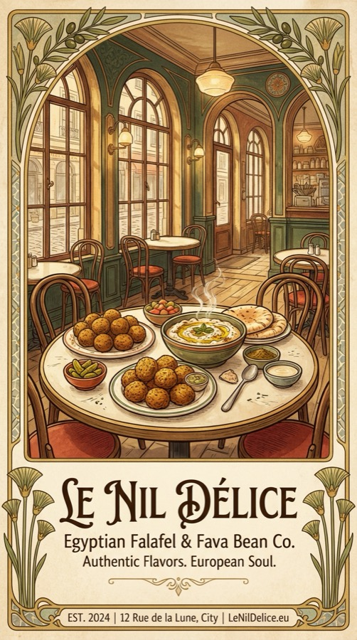
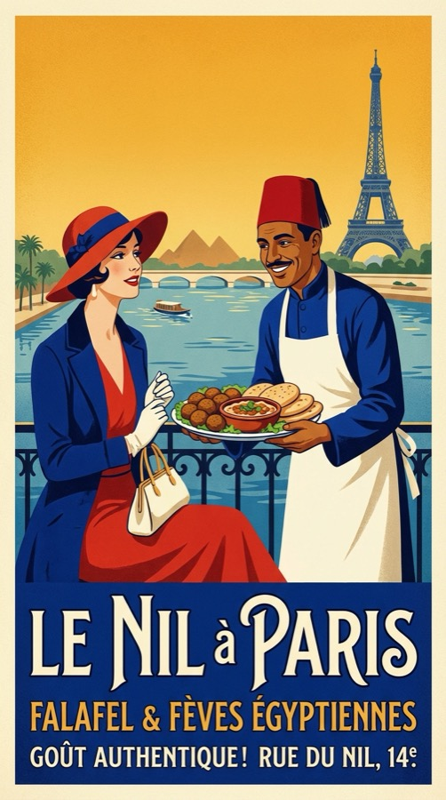
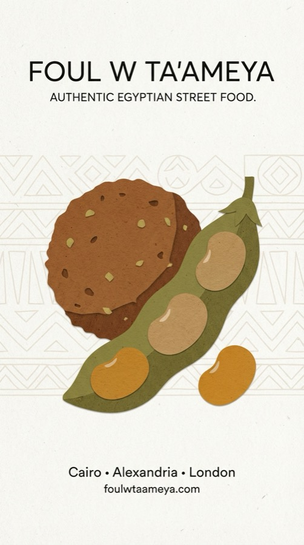
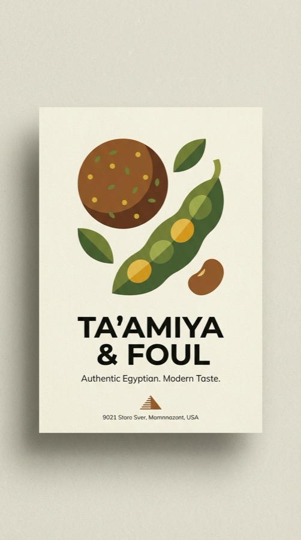

04 · التنفيذ المرئي
عينة من الـ 55 تصميم









Visual Design · Food Brand · Egyptian Market
55 تصميم ملصق لمطعم مصري بالـ AI — بوسترات إعلانية وتصاميم منتجات بأسلوب بصري عصري يتكلم لغة الزبون المصري.
01 · المشكلة
المطلوب كان visual identity لمطعم فول وفلافل مصري — بس مش الـ design التقليدي اللي بيبان فيه "بتاعت الكمبيوتر" أو المتكلف اللي مش شعبي.
التوازن الصعب: عصري وبسيط وشعبي في نفس الوقت. يناسب السوشيال ميديا والطباعة الفعلية.
02 · التفكير
بدل ما نعمل 5 تصاميم ونلتزم بيهم — الـ AI approach بيخلينا نعمل 55 تصميم بنفس الجودة. الفائدة مش بس الكمية — ده خلى المطعم يقدر يختار الأنسب لكل مناسبة ويبدّل المحتوى بدون ما يحتاج مصمم كل مرة.
التفكير كان: الـ consistency مش لازم تيجي من مصمم واحد — تيجي من system واضح. اللون والـ typography والـ style — ثابتين. بس الـ content بيتغير.
03 · النظام والأدوات
04 · التنفيذ المرئي




05 · النتيجة
المطعم خرج بـ 55 تصميم جاهز للطباعة والسوشيال — ما يكفي لأكتر من سنة كاملة من المحتوى لو اتنشر بشكل منتظم.
الأهم: الـ prompt system موجود. أي تصميم جديد محتاج — بنطبق نفس الـ style وبينطلع consistent مع الـ 55 اللي قبله.
05.5 · القيمة للعميل
قبل المشروع: محتوى السوشيال بياخد وقت وتكلفة كل مرة. بعد المشروع: مكتبة 55 تصميم جاهزة — ينشر منها كل أسبوع لمدة سنة كاملة بدون ما يحتاج مصمم تاني.
والـ prompt system موجود — أي تصميم جديد بنفس الـ style في أقل من 10 دقائق. المطعم اكتسب قدرة إنتاج محتوى مستمر بدون اعتماد على طرف تالت.
06 · ما بعده
الخطوة الجاية كانت content calendar كامل — جدول نشر للـ 55 تصميم على مدار 12 شهر مع تحديد الـ captions والـ hashtags والـ timing الأمثل.
كمان: بناء menu PDF احترافي بنفس الـ visual identity للطباعة وللـ WhatsApp catalog.